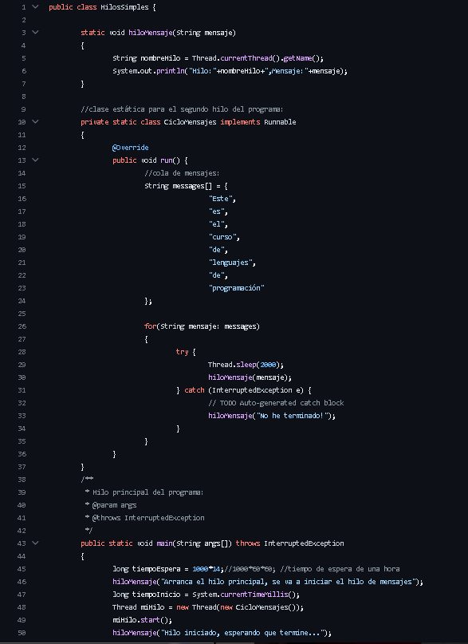
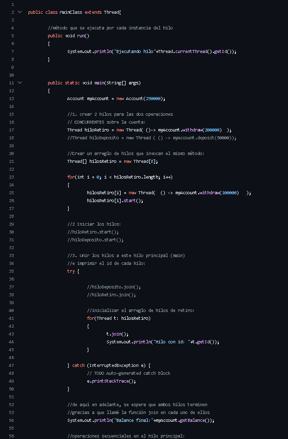

<!DOCTYPE html>
<html lang="es"></html>
<head>
  <meta charset="UTF-8">
  <meta name="viewport" content="width=device-width, initial-scale=1.0">
  <title>Unidad 3</title>
  <link rel="stylesheet" href="main.css">
</head>
<body>
<h1>Unidad 3</h1>
<p>En esta ultima unidad, empezamos a ver en Java el concepto de Hilos y concurrency:</p>
<p>Hilos: Ejecuta funciones para que continúe con la ejecución de la función main o la función desde donde se llamó al hilo.</p>
<p>Concurrency: Permite planificar tareas para que se ejecuten en paralelo. </p>
<p>Ejemplo Simple Hilos</p>

<p></p>

<p>Ejemplo Concurrency</p>


<p>Fin :D</p>
<div class="Botones">
    <a href="index.html"><button>Inicio</button></a>
    <a href="unidad2.html"><button>Unidad 2</button></a>
    <a href="unidad3.html"><button>Unidad 3</button></a>

</body>
</html>